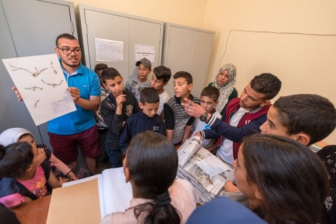
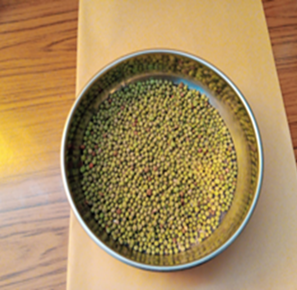
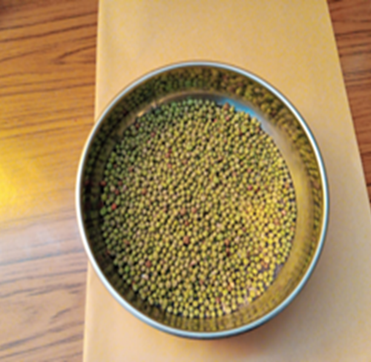

Activités & Services
Conservation & Recherche


- Préservation d'espèces rares, endémiques et menacées
- Suivi des écosystèmes
- Références pour publications (vouchers)
- Analyse des impacts du changement climatique
Ateliers & Formations


- Identification des espèces
- Stages pratiques
- Missions de terrain
- Intégration d'étudiants
Savoirs Bioculturels


- Documentation des usages traditionnels
- Savoirs ethnobotaniques du Haut Atlas
- Préservation des connaissances locales
Sensibilisation


- Contribution aux ODD 15 et 13
- Médiation scientifique
- Engagement citoyen


 
